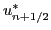
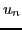
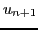

Arbitrary Lagrangian-Eulerian (ALE) methods appear to be reasonable compromise between Lagrangian and Eulerian approaches, allowing to solve large variety of fluid problems. The standard ALE algorithm uses a Lagrangian solver to update fluid quantities and the computational mesh in the next time step, which can eventually tangle the mesh. To avoid such problems, mesh regularization (untangling or smoothing) is applied in the case of low mesh quality, followed by a remapping step that interpolates all fluid quantities from the Lagrangian to the smoothed mesh.
Here, we focus on the last part of the ALE algorithm - remapping - in the case of a staggered discretization, where scalar quantities (density, pressure, specific internal energy) are defined inside mesh cells, and vector quantities (positions, velocities) are defined on mesh nodes. A staggered discretization is used in most current ALE codes. Generally, remapped nodal kinetic energy is not equal to nodal kinetic energy obtained from remapped velocities, and this discrepancy leads to energy conservation violation and consequently to wrong shock speeds. The kinetic energy discrepancy is usually treated by distributing it to the internal energy of adjacent cells [2].
An alternative 1D approach introduced in [1] is based on the construction of high-order interpolated velocities  used for momentum fluxes (and thus for the velocity update)
In this presentation, we demonstrate that the system (5) does not always have a solution, and analyze this situation. Two alternative approaches will be introduced.
In the first approach, the flux equality (4) is not enforced strictly, but its discrepancy is minimized in a least squares sense
In the second approach, the kinetic energy discrepancy is directly minimized. Unfortunately, zero kinetic energy discrepancy is generally satisfied by infinitely many solutions. Because flux velocities represent values interpolated from adjacent nodal velocities  and , this velocity should remain bounded by these neighbor values and no under/overshoots should appear. Thus, additional terms are added to the kinetic energy discrepancy formula, which enforce these bounds during minimization
We will also mention a generalization of these approaches to 2D logically orthogonal meshes (including corner coupling), and demonstrate their behavior in the context of an ALE hydro code for a particular fluid flow problem.